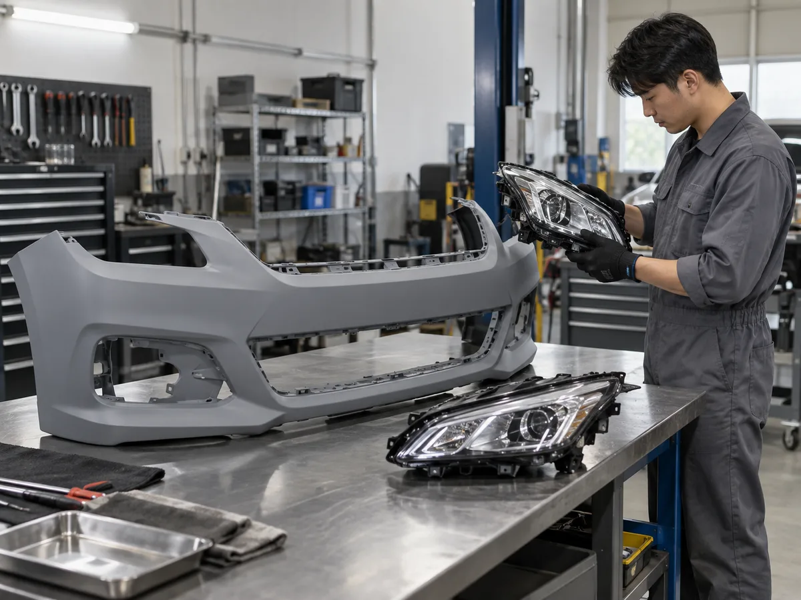
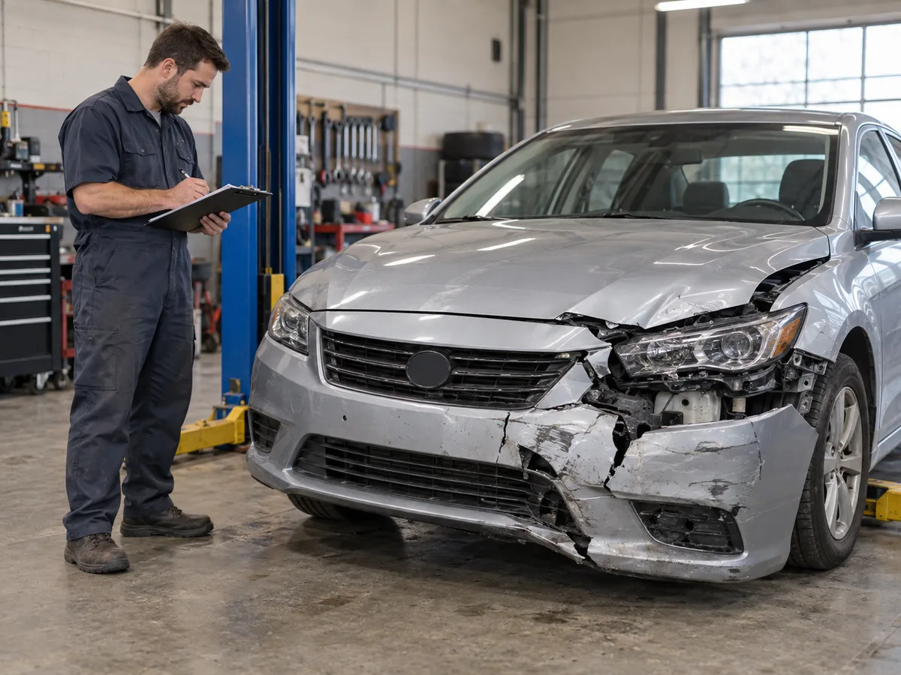
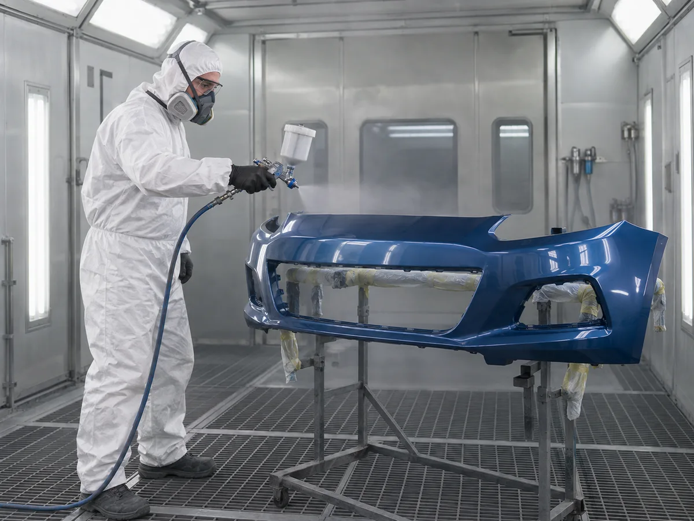
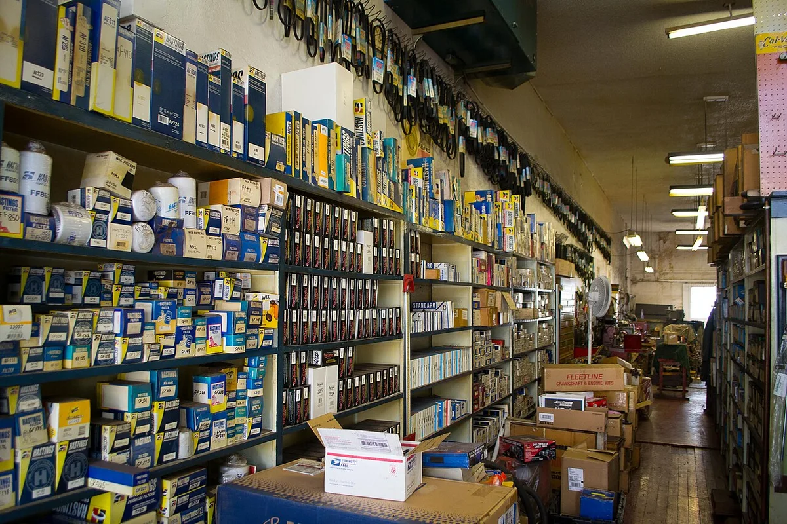

▲ 사고 수리 견적 상담에서는 순정·인증 대체부품 구분을 서면으로 확인하는 것이 출발점이다 ⓒ CarPrism (AI 생성 이미지)
"순정 대신 대체부품 쓰면 사고 수리 품질이 떨어지는 것 아닌가?" 정비소 견적서에 '인증 대체부품(품질인증부품)'이 적혀 있으면 많은 운전자가 이렇게 묻는다. 국토교통부가 지정한 기관에서 성능·품질을 인증받은 부품인데도 소비자 인지도는 낮고, 2025년에는 보험 표준약관 개정을 둘러싸고 '정품 수리 선택권' 논란까지 일었다. 법령 조문부터 가격, 보험 특약, 견적서에서 확인할 것까지 공식 자료 기준으로 정리했다. 확인되지 않은 부분은 그대로 '확인 못함'으로 표시했다.
1. 인증 대체부품이란 — 법 조문으로 확인한다
대체부품은 자동차 제작사가 출고 때 장착한 부품을 대신해 쓸 수 있는 부품이다. 국가법령정보센터에 실린 자동차관리법 제30조의5는 ①대체부품의 정의, ③국토교통부장관의 대체부품인증기관 지정, ④인증받은 대체부품의 '품질인증부품' 명칭과 표시, ⑤인증 기준·방법·표시 등은 국토교통부령으로 정한다는 내용을 담고 있다. 이 조항은 2014년 1월 7일 신설됐다. 자동차관리법 제30조의5 바로가기
| 항 | 내용(요약) |
|---|---|
| 제1항 | 대체부품 = 자동차제작사에서 출고된 자동차에 장착된 부품을 대체하여 사용할 수 있는 부품 |
| 제3항 | 국토교통부장관은 부령 기준에 적합한 자를 지정해 대체부품의 성능·품질을 인증하게 할 수 있음(대체부품인증기관) |
| 제4항 | 인증받은 대체부품(품질인증부품)의 제작사 등은 인증받은 사실을 해당 부품에 표시할 수 있음 |
| 제5항 | 인증기관 지정 절차, 인증기준·인증방법·인증표시 등은 국토교통부령(시행규칙)으로 정함 |
KDI 경제교육·정보센터가 소개한 정책자료는 대체부품을 "OEM부품과 동등 품질의 신품"으로 설명하며, 소비자 인지도가 낮아 '품질인증부품'이라는 이름으로 부른다고 밝혔다. 즉 중고·재생품이 아니라 새 부품이다. 다만 법에는 '표시할 수 있다'고 되어 있으므로, 표시 방법과 자세한 기준은 시행규칙과 KAPA 안내에서 확인해야 한다. KDI 정책자료 바로가기

▲ 외장부품은 인증 대체부품이 가장 많이 쓰이는 영역이다. 도장 전 상태의 새 범퍼 커버(개념 이미지) ⓒ CarPrism (AI 생성 이미지)
| 구분 | 순정(OEM)부품 | 인증 대체부품(품질인증부품) |
|---|---|---|
| 만드는 곳 | 자동차 제작사 또는 제작사 납품 협력사 | 제작사와 무관한 일반 부품사 |
| 품질 확인 | 제작사 기준 | 국토교통부 지정 인증기관의 성능·품질 인증 |
| 신품 여부 | 신품 | 신품 |
| 가격 수준(예시) | 기준 100 | 금융당국은 35~40% 저렴, 소비자원 수입차 범퍼 5종은 약 59% 가격으로 조사 |
| 인증 대상 예 | - | KAPA 안내: 외장(펜더·도어·트렁크·범퍼), 등화, 벨트·오일류 등 기능성·소모성 부품 |
📍 '타이어'에 대한 안내
KAPA가 공개한 인증 대상 예시는 외장·등화·기능성·소모성 부품(벨트, 오일류 등)이며, 타이어가 이 대체부품 인증의 대상인지는 법령·KAPA·소비자원 자료 어디에서도 확인하지 못했다. 타이어는 별도 제품 안전 기준을 따르므로, 타이어 교체는 이 기사의 '인증 대체부품' 절차와 구분해 정비소에 문의하는 것이 안전하다.
2. 제도 연혁 — 2015년 인증제 시행부터 2025년 약관 논란까지
대체부품 제도는 2014년 법 신설 이후 인증 → 보험 특약 → 약관 개정 순으로 넓어졌다. 수치는 자료마다 집계 시점과 방식이 달라 참고치로 봐야 한다.
| 시점 | 내용 | 출처 |
|---|---|---|
| 2014.1.7 | 자동차관리법 제30조의5 신설 | 법령정보센터 |
| 2015.1.8 | 대체부품 인증제 시행 | KAPA |
| 2017.12말 | 품질인증 대체부품 620개 인증 완료 | 인더뉴스(2018.1.22) |
| 2018.2 | 자기차량손해 품질인증부품 사용 특약 적용(OEM 가격 25% 지급) | KDI·인더뉴스 |
| 2020.11 | 120개 품목, 1,584종 출시(수입차용 1,282, 국산차용 302) | 보험연구원 자료(2020.12.4) |
| 2022 상반기 | 인증부품 1,343개 중 국산차용 46개(현대 32, 기아 14)로 보도. 특약 활용은 극히 적었다는 보도 | 보험매일(2022.7.19) |
| 2024.2.20 | 제30조의5 제4항 개정. 교환수리 때 OEM·품질인증부품 모두 쓸 수 있는 근거 마련 | 법령정보센터·금융위 |
| 2025.2.26 | 국토부·금융위·금감원 자동차보험 개선대책에 품질인증부품 약관 명시 포함 | 금융위원회 |
| 2025.8.5 | 소비자 선택권 보장 보완안 발표 | 금융위원회 |
📍 부품 수치 해석
2020년 '1,584종'과 2022년 '1,343개'는 집계 단위(품목·종류·개수)가 달라 직접 비교할 수 없다. 국산차 부품 46개는 2022년 상반기 기준 보도이며, 이후 변동은 확인하지 못했다. 보험매일 보도 바로가기 보험연구원 자료 바로가기
3. 순정 대비 얼마나 싼가 — 조사 사례로 보는 가격 차이
가격 차이는 공식 조사에서 비교적 분명하게 나타난다. 한국소비자원은 2020년 7월 조사에서 수입 승용차 전방 범퍼 5종을 비교했는데, 대체부품 가격은 모든 차종에서 순정품의 약 59%였고 인장·충격·굴곡강도 등 관련 기준을 모두 충족했다고 밝혔다. 조사 사례 가운데 아우디 A6는 순정 768,100원, 대체부품 453,170원이었고, 벤츠 E클래스는 728,000원과 429,600원이었다. 소비자원 조사 바로가기
국산차 사례는 정부 소개 자료에 있다. 대한민국 정책브리핑에 따르면 현대 그랜저 범퍼 커버는 순정 121,000원, 인증 대체부품 78,700원으로 약 35% 저렴했다. 방향지시등도 132,000원과 85,800원으로 비슷한 차이를 보였다. 금융당국은 2025년 8월 발표에서 품질인증부품이 OEM부품보다 35~40% 저렴하다고 설명했다. 이 수치는 조사·사례에서 나온 것으로, 모든 부품·차종에 그대로 적용되는 값은 아니다. 정책브리핑 사례 바로가기
| 차종·부품 | 순정(OEM) | 대체부품 | 출처·시점 |
|---|---|---|---|
| 아우디 A6 전방 범퍼 | 768,100원 | 453,170원 | 한국소비자원 2020.7 |
| BMW 3시리즈 전방 범퍼 | 656,700원 | 387,500원 | 한국소비자원 2020.7 |
| 포드 익스플로러 전방 범퍼 | 972,800원 | 574,000원 | 한국소비자원 2020.7 |
| 벤츠 E클래스 전방 범퍼 | 728,000원 | 429,600원 | 한국소비자원 2020.7 |
| 렉서스 ES 전방 범퍼 | 457,600원 | 270,000원 | 한국소비자원 2020.7 |
| 현대 그랜저 범퍼 커버 | 121,000원 | 78,700원 | 정책브리핑(정부 소개 사례) |

▲ 사고 수리 견적은 교환할 부품 종류와 공임을 항목별로 나누어 확인해야 한다(개념 이미지) ⓒ CarPrism (AI 생성 이미지)
📍 소비자 인식도 함께 봐야 한다
소비자원이 2020년 7월 소비자 1,000명을 설문한 결과, 정보 제공 전에는 순정 부품을 고르겠다는 응답이 93.5%였지만 정보를 알려 준 뒤에는 순정 50.4%, 대체부품 49.6%로 좁혀졌다. 한 보도는 설문 응답자의 35.7%가 대체부품을 '중고·재생품과 비슷하다'고 인식했다고 전했다. 가격이 싸다는 점보다 새 부품이라는 사실과 인증 여부가 선택의 핵심임을 보여 주는 대목이다.
4. 보험 '25% 지급' 특약 — 누가 어떤 사고에서 받을 수 있나
KDI 경제교육·정보센터 정책자료에 따르면 품질인증부품 사용 특약은 2018년 2월부터 적용됐다. 자기차량손해 담보에 가입하면 별도 보험료 없이 자동으로 포함되고, 소비자가 품질인증 대체부품을 선택하면 OEM부품 가격의 25%를 차주에게 지급한다. 인더뉴스의 2018년 1월 보도는 이 특약이 단독사고, 가해자 불명사고, 일방과실사고에만 적용되고 쌍방과실·대물사고는 제외된다고 전했다.
한 손해보험사가 공개한 특약 안내에는 조건이 더 구체적으로 나와 있다. 이 안내 기준으로 25% 지급은 단독사고 또는 일방과실(100%) 사고이며, 범퍼·후드·펜더·도어·트렁크리드·백도어 등 외장부품 경미손상(제1·2·3유형)에 적용된다. 이는 보험사 한 곳의 공개 안내 사례이므로 다른 회사는 약관을 따로 확인해야 한다. 보험사 공개 특약 안내(예시) 바로가기
| 항목 | 확인된 내용 |
|---|---|
| 시행 | 2018년 2월 |
| 대상 담보 | 자기차량손해(현행). 대물배상 확대는 2025.8 발표에서 '예정' |
| 대상 사고 | 단독·가해자 불명·일방과실 사고 |
| 지급액 | OEM부품 공시가격의 25% |
| 적용 부품(예시 안내) | 범퍼·후드·펜더·도어·트렁크리드·백도어 등 외장, 경미손상 1~3유형 |
| 지급 제한(예시 안내) | 품질인증부품이 없거나 미생산, 미인증 부품 수리, 인증부품 사용 보험금이 OEM 사용 보험금을 넘는 경우 |
| 자기부담금 | 지급액을 수리비에 포함해 자기부담금 비율을 산정한다는 안내 사례 |
✅ 계산 감 잡기(가정 예시)
· 자차 단독사고로 순정 공시가 100만 원짜리 외장부품을 갈아야 하고, 인증 부품이 65만 원이라고 가정하면(예시 수치) 25%는 순정 공시가의 25만 원이다
· 실제 지급 방식·자기부담금 처리·한도 조건은 약관에 따라 다르므로 보험사에 서면 안내를 요청
· 이 기사는 특정 보험사·상품을 추천하거나 비교하지 않는다
5. 2025년 약관 논란 — 무엇이 '확정'이고 무엇이 '예정'인가
금융당국은 2025년 2월 26일 자동차보험 개선대책에서 품질인증부품을 약관에 명시해 OEM부품 중심 수리 구조를 개선하겠다고 밝혔다. 이후 금융감독원이 표준약관을 개정해 2025년 8월 16일부터 시행할 예정이라는 보도가 이어졌다. 전자신문 보도는 이 약관이 품질인증부품을 신부품 범위에 포함하고, 대물배상 수리비 인정 한도를 "조달 기간과 가격을 고려해 비용이 최소화되는 부분품"으로 교환·수리하는 비용으로 정한다고 전했다. 예컨대 OEM부품 100만 원, 품질인증부품 65만 원이고 둘 다 즉시 조달 가능하면 65만 원이 한도라는 설명이었다. 전자신문 보도 바로가기
소비자 단체와 정비업계는 선택권 침해·품질 우려를 제기했고, 금융당국은 8월 5일 보완안을 내놨다. 금융위원회 보도참고 자료와 언론 보도를 종합한 핵심은 다음과 같다. 이 자료들은 시행 시점을 명시하지 않았고, '예정'으로 표현했다. 금융위원회 보도참고 바로가기 더팩트 보도 바로가기

▲ 대체부품은 도장·탈부착 공정을 거쳐 장착된다. 보험 수리에서는 부품비와 공임·도장비를 나누어 본다(개념 이미지) ⓒ CarPrism (AI 생성 이미지)
| 항목 | 내용 |
|---|---|
| 소비자 선택권 | 소비자가 요청하면 특약(무료·자동가입)으로 OEM부품 수리 가능 — '예정' |
| 신차 예외 | 출고 후 5년 이내 신차는 OEM부품만 사용(전체 차량의 30.6%가 이 범주라고 금융위가 안내) |
| 주요 부품 제한 | 브레이크·휠·조향장치 등은 품질인증부품 사용 제한 |
| 우선 적용 부품 | 외장부품(범퍼·보닛·펜더) |
| 25% 지급 확대 | 자기차량손해에 더해 대물배상 담보로 확대 적용 — '예정' |
| 향후 | 소비자 인식 개선·부품 수급 안정 전까지 선택권 보장, 지속 여부 추후 검토 |
✅ 보험 관련 확인 포인트
· 내 자동차보험의 품질인증부품 사용 특약·OEM 요청 특약 가입 여부와 적용 시점은 보험사·계약별로 다르므로 약관에서 확인(금융당국 발표는 시행일 미명시)
· 대물배상(상대 차량 수리) 처리에서도 인증부품이 적용될 수 있음을 이해
· 정품 수리를 원하면 사고 접수·견적 단계에서 미리 요청하고, 자기부담이 생기는지 확인
· 보도에 따르면 정품 수리를 원하는 소비자는 비용을 보험금으로 보상받는 방향으로 안내됐으나(한국일보), 세부 조건은 약관 확인 필요
6. '미수선' 처리를 고민한다면 — 수리 안 하고 보험금 받을 때
사고 후 수리를 하지 않고 수리비 상당 보험금을 받는 '미수선수리비'는 대체부품 제도와 맞물려 셈법이 달라질 수 있다. 수리비 인정 기준이 "조달 기간과 가격을 고려해 비용이 최소화되는 부분품" 기준이라는 점을 감안하면 대체부품 가격 기준으로 산정될 가능성을 염두에 둬야 한다. 다만 미수선 지급액의 산정 방식이나 25% 지급 특약의 미수선 적용 여부는 법령·금융당국 자료·공개 안내에서 확인하지 못했다. 보험사에 서면으로 산정 근거를 요청하는 것이 안전하다.
▲ 견적서의 부품 구분·금액·공임 항목을 하나씩 확인한다(개념 이미지) ⓒ CarPrism (AI 생성 이미지)
📍 판단 기준
미수선을 선택하면 실제 수리비가 아니라 산정 금액을 받게 되므로, 나중에 정비소에서 수리하면 차액이 생길 수 있다. 외장 도장·판금이 함께 필요한 경우 총액을 견적서로 미리 비교해 두는 편이 낫다. 중고차로 팔 때는 사고 이력과 수리 여부가 거래에 영향을 줄 수 있어, 수리 이력 관리 기준도 함께 고려해야 한다.
7. 견적서에서 반드시 확인할 것 — 표시·출처·보증
정비소가 대체부품을 권할 때는 부품 종류를 견적서에 명확히 적어 달라고 요구하는 것이 첫걸음이다. 법상 인증 표시는 제작사 등이 '할 수 있는' 사항이므로, 부품에 표시가 있는지와 인증 사실을 정비소가 설명할 수 있는지를 함께 확인하자. 표시 방법은 시행규칙에 정해져 있고, 표시 디자인 자체는 이번 조사에서 KAPA 공개 자료로 확인하지 못했다.
| 확인 항목 | 확인 방법 | 주의점 |
|---|---|---|
| 부품 구분 | 견적서에 'OEM'·'품질인증(대체)' 표기 여부 | 구분 없이 '부품 교환'이라고만 적혀 있으면 문의 |
| 인증 표시 | 부품에 붙은 인증 표시·제조사명, 정비소의 인증 사실 설명 | 표시 디자인은 확인 못함 — KAPA에 문의(1899-2052) |
| 신차·주요부품 여부 | 출고 5년 이내 차인지, 브레이크·휠·조향인지 | 2025.8 발표 기준 OEM만 사용하는 대상 |
| 보증 조건 | 부품·공임 보증 기간과 무상 재수리 범위 | 공식 자료에서 표준 보증 기간은 확인 못함, 서면 확인 |
| 금액 분리 | 부품비·공임·도장비 항목별 금액 | 부품비 차액과 공임이 함께 달라질 수 있음 |
| 보험 처리 범위 | 25% 지급 특약·OEM 요청 특약 적용 여부 | 정품 요청 시 추가 부담 여부 확인 |
▲ 대체부품 재고와 납기는 정비소·부품사마다 다르다. 즉시 조달 여부가 수리 기간과 인정 비용에 영향을 준다(개념 이미지) ⓒ CarPrism (AI 생성 이미지)
8. 주요 부품별로 보면 — 무엇이 대체되고 무엇은 안 되나
KAPA는 인증 대상으로 외장부품(펜더·도어·트렁크·범퍼), 등화부품, 기능성·소모성 부품(벨트, 오일류 등)을 제시한다. 정책브리핑은 범퍼 커버·램프·브레이크 디스크 등 120개 품목이 인증 대체부품으로 유통된다고 소개했다. 보험연구원 자료는 2020년 11월 기준 120개 품목에서 1,584종이 출시됐다고 밝혔다. 반면 금융당국 보완안은 브레이크·휠·조향장치를 품질인증부품 사용 제한 대상으로 안내해, 인증 여부와 보험 수리 적용은 별개일 수 있다. KAPA 대체부품인증 바로가기
| 부품군 | 인증 대체부품 | 보험 수리 적용(2025.8 발표 기준) |
|---|---|---|
| 범퍼·펜더·보닛 등 외장 | 인증 대상 | 우선 적용 대상 |
| 헤드램프 등 등화 | 인증 대상 | 공식 세부 확인 필요 |
| 벨트·오일·필터 등 소모성 | 인증 대상 예시(KAPA는 벨트·오일류 언급) | 공식 세부 확인 필요 |
| 브레이크·휠·조향장치 | 일부 인증 사례(정책브리핑: 브레이크 디스크 등) | 사용 제한 대상 |
| 타이어 | 공식 자료에서 확인 못함 | 공식 자료에서 확인 못함 |

▲ 벨트·필터 같은 소모성 부품도 인증 대체부품이 유통되는 영역이다. 해외 부품 매장의 진열 모습(참고 이미지, 국내 인증 표시와 무관) ⓒ Visitor7 / Wikimedia Commons (CC BY-SA 3.0)
국산차 공급은 상대적으로 부족한 것으로 알려졌다. 보험매일은 2022년 상반기 기준 인증부품 1,343개 가운데 국산차용이 46개(현대 32개, 기아 14개)에 불과하다고 전했고, 인더뉴스는 2018년 1월 당시 국산차용 품질인증 대체부품 생산이 이뤄지지 않고 있다고 전했다. 이후 현재 수치는 확인하지 못했으므로 참고치로만 본다. 수리 비용 구조는 범퍼 수리 국산·수입 비교 기사에서 이어서 볼 수 있다. 인더뉴스 보도 바로가기
9. 주의점과 자주 묻는 질문
| 질문 | 답(공식·보도 기준) |
|---|---|
| 대체부품은 중고품인가? | 아니다. KDI 정책자료는 OEM부품과 동등 품질의 신품으로 설명한다 |
| 보험사가 대체부품을 강제하나? | 금융당국은 소비자 요청 시 특약으로 OEM 수리가 가능하도록 하겠다고 발표했다(시행 시점 미확인) |
| 내 신차도 대체부품으로 수리하나? | 출고 후 5년 이내 신차는 OEM부품만 사용하도록 보완됐다 |
| 브레이크·휠도 되나? | 브레이크·휠·조향장치는 사용 제한 대상으로 안내됐다 |
| 인증 표시는 반드시 붙나? | 법 제30조의5 제4항은 '표시할 수 있다'로 규정한다 |
- 소비자 우려: 소비자 단체 등은 품질 불확실성, 자동차 가치 하락, 중고차 거래 불이익 우려를 제기했다. 이는 공식 검증된 사실이 아니라 소비자 측 우려로 구분해서 봐야 한다.
- 수입차 보증 수리: 제조사 보증 조건과 인증 정비 네트워크 정책이 차종마다 다르다. 수입차 사고 수리 품질보증 사례도 참고할 만하다.
- 사고 후 대차·합의: 수리 기간 대차 문제는 사고 대차 가이드에서 확인한다.
10. 요약
인증 대체부품(품질인증부품)은 자동차관리법 제30조의5에 따라 국토교통부 지정 인증기관의 성능·품질 인증을 받은 신품이며, 인증 표시는 제작사 등이 '할 수 있는' 사항이다. 금융당국은 OEM부품보다 35~40% 저렴하다고 설명했고, 소비자원 2020년 조사에서 수입차 범퍼 5종은 순정품의 약 59% 가격이었다.
보험에서는 2018년 2월부터 자기차량손해 특약(OEM 공시가격 25% 지급)이 적용됐다. 2025년 8월 금융당국은 소비자 요청 시 OEM 수리 특약(무료·자동가입), 신차 5년 이내 OEM 사용, 브레이크·휠·조향 제한, 대물배상 확대를 '예정'으로 발표했으나 시행 시점은 공식 자료로 확인하지 못했다.
견적서에서는 부품 구분·인증 표시·보증 조건·금액 분리·보험 처리 범위를 서면으로 확인하자. 타이어의 대체부품 인증 여부, 미수선 산정 방식, 표준 보증 기간, 인증 표시 디자인은 확인하지 못했으므로 정비소·보험사·KAPA에 직접 문의하는 것이 좋다.